Constraints
From the previous section one might think that all problems in mechanics can be treated solving the set of differential equations (1.4.1)
ṗ = Fi(e) + Σj Fji
This view, is however oversimplified, because in many cases it could be necessary to take into account the constraints that limit the motion of the system. From the tension of wire of a penudul to the beads of an abacus which are contrained to one-dimensional motion or the motion of a gas in a container, these are all constraints.
Constraints may be classified in varios ways. If the equation of constraint (the relationship between the coordinates of the particles and possibly the time) can be expressed in the form
f(r1, r2, r3, ...., t) = 0 1.2.1
then the constraint is called holonomic. The key elements in the definition of a holonomic constraint is the equal sign.
As an example of a holonomic system, consider the motion in the xy plane of the two particles shown in Fig. 1-2. These particles are connected by a rigid rod of length ℓ; hence the corresponding equation of constraint is
(x2 − x1)2 + (y2 − y1)2 − ℓ2 = 0
A particle constrained to move along any curve or on a given surface is another obvious example of an holonomic constraint, with the equations defining the curve or surface acting as the equations of a constraint.
Constraints not expressible in this fashion are called nonholonomic. For instance, the requirement that all molecules of a gas remain inside a vessel is described by inequalities: if the vessel is a box with sides a, b, c, we have 0 < xi < a, 0 < yi < b, 0 < zi < c, where ri = (xi, yi, zi) is the position vector of the ith molecule (treated as a point particle).The walls of a gas container constitute a nonholonomic constraint. The constraint involved in the example of a particel placed on the surface of a sphere is also nonholonomic, for it can be expressed as an inequality
r − a2 ≥ 0
Generalized Coordinates
Constraints introduce two types of difficulties in the solution of mechanical problems. First, the coordinates ri are no longer all independent, since they are connected by the equations of constraint; hence the equation of motion are not all independent. Second the forces of contraint, e.g. the force the wall exterts on gas particles is not furnished a priori. They are among the unkowns of the problem and must be obtained from the solution we seek. Indeed, imposing constraints on the system is simply another method os stating that there are forces present in the problem that cannot be specified directly but are known rather in terms of their effect on the motion of the system.
In the case of holonomic constraints, the first difficulty (of independence) is solved by the introduction of generalized coordinates. So far wee have been thinking implicitly of Cartesian coordinates. A system of N particles, free from constraints, has 3N independent coordinates or degrees of freedom. If there exist holonomic constraints, expressed in k equations in the form (1.2.1), then we may use these equations to eliminate k of the 3N coordinates, and we are left with 3N − k independent coordinates or degrees of freedom. This elimination of the dependent coordinates can be expressed in another way, by the introduction of new, 3N − k, independent variables q1, q2, ... ,q3N − k in terms of which the old coordinates r1, r2, rN are expressed by equations of the form
r1 = r1 (q1, q2 , ... , q3N − k)
.
.
.
rN = rN (q1, q2 , ... , q3N − k)
containing the constraints in them implicitly. These are transformation equations from the se of (ri variables to the (qi) set.
If the constraint is nonholonomic, the equations expressing the constraint cannot be used to eliminate the dependent coordinates.
Usually the generalized coordinate qi unlike the Cartesian coordinates will not divide into conveniet groups of three that can be associated together to form vectors.
Example of generalized coordinates are the two angles expressing position of a particle restricted to move on the surface of a sphere, say latitude and longitude; Or in the example of a double pendulum the two angles θ1, θ2.
Even if there are no constraints generalized coordinates can be still useful as for the case of a particle moving in a central force field (V = V(r), there is no constraint involved, but it is clearly more convenient to use spherical polar coordinates than Cartesian coordinates.